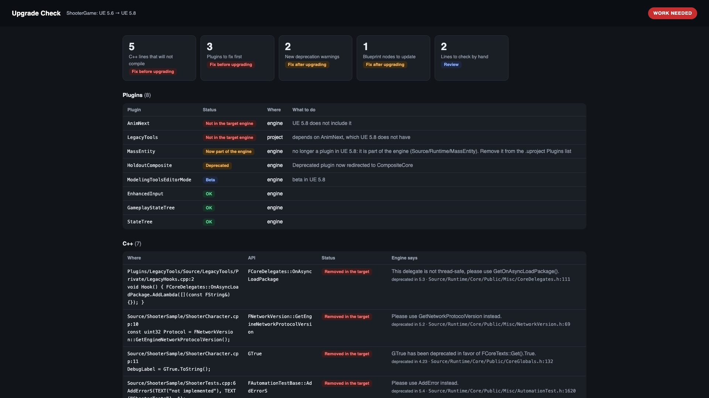
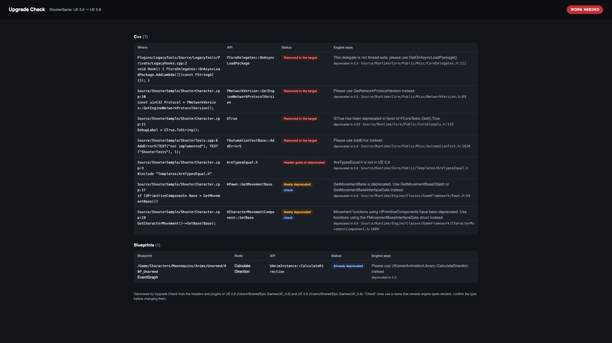
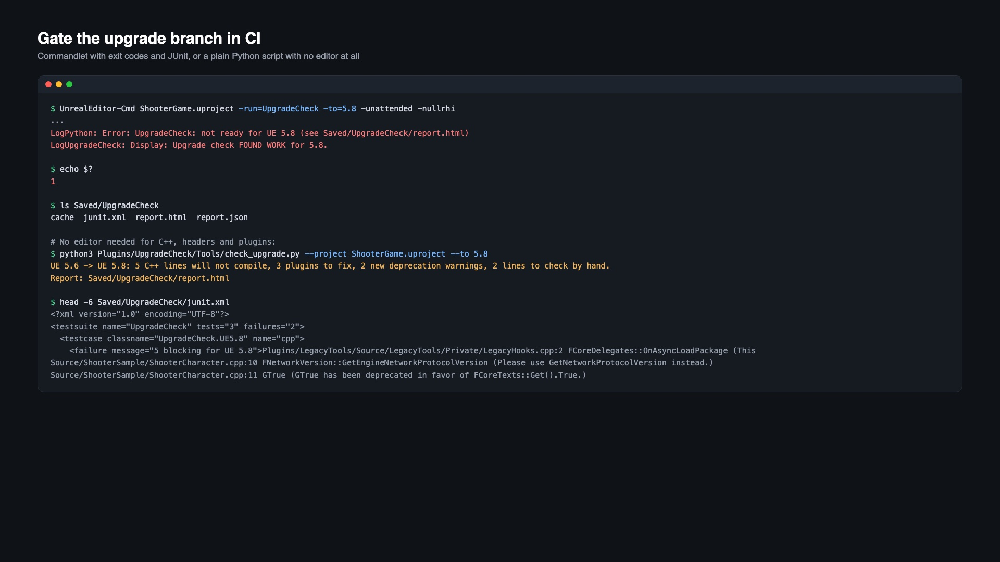

Know what breaks before you upgrade the engine
Upgrade Check compares your project with the Unreal Engine version you want to move to, using that engine's own headers and plugins, and tells you which lines will not compile, which plugins block the move and which Blueprint nodes need attention. Nothing in the project changes.
Free command-line version on GitHub
C++ that will not compile
APIs your current engine deprecated and the new one deleted, with the engine's own replacement hint.
Headers
Includes the new engine no longer has, or marks deprecated.
Plugins
Plugins the new engine dropped or folded into the engine, Fab plugins installed to the old engine only, and project plugins that need a rebuild.
Blueprints
Nodes that call a C++ function or use a C++ variable the new engine removed or deprecated.
New warnings
Everything deprecated after your version, so the follow-up work is planned, not discovered.
Install
- Install the version you are moving to with the Epic Games Launcher (or have a source build). The check reads its
Engine/SourceandEngine/Plugins. - Install Upgrade Check to your current engine from Fab, or copy it to
YourProject/Plugins/UpgradeCheck. - Enable Upgrade Check in Edit > Plugins and restart the editor.
- Tools > Upgrade Check > Check upgrade to UE 5.x. There is one entry per newer engine installed.
The first run reads both engines' headers (10 to 30 seconds each) and caches them in Saved/UpgradeCheck/cache. The plugin runs in Unreal Engine 5.6, 5.7 and 5.8 on Windows, macOS and Linux; the target can be any later version on the machine. Editor only: nothing ships in your game.
CI
UnrealEditor-Cmd MyGame.uproject -run=UpgradeCheck -to=5.8 [-existing] [-noblueprints] [-failon=blocking|warnings|never] -unattended -nullrhi
| Exit code | Meaning |
|---|---|
| 0 | Ready for the target engine |
| 1 | Work needed: a line that will not compile, a blocking plugin, or a Blueprint node that uses a removed API (with -failon=warnings, also new deprecations) |
| 2 | The check could not run |
Output: report.html, report.json and junit.xml in Saved/UpgradeCheck.
Without the editor
C++, headers and plugins can be checked with plain Python 3.9 or later. The same check is free as Upgrade Check Lite.
python3 Plugins/UpgradeCheck/Tools/check_upgrade.py --project MyGame.uproject --to 5.8 [--from 5.6]


Reading the report
- Removed in the target: deprecated in your current engine and no longer declared anywhere in the target. Expect a compile error; the message says what to use instead.
- Header gone or deprecated: the
#includeis not in the target engine, or the target marks it deprecated. - Newly deprecated: compiles with a warning; plan to replace it.
- check: several engine types declare the name, so confirm the type before changing the line. Calls written as
UFoo::Barare matched to the right type, and names that hundreds of engine types use are only reported in that form. - Now part of the engine: the plugin became an engine module. Remove it from the
.uprojectPlugins list.
Notes and limits
- The C++ check matches names, not compiled types, and ignores comments and strings.
- APIs that changed signature without a deprecation are not detected; build in the new engine to confirm.
- Blueprint checks load every Blueprint in
/Gameand in project plugins.
Support
Include your engine versions (from and to), operating system, and Saved/UpgradeCheck/report.json if you can share it.
Email support Open a support request
Also by us: Project Audit Pro finds and fixes unused assets, broken references, redirectors and naming drift.